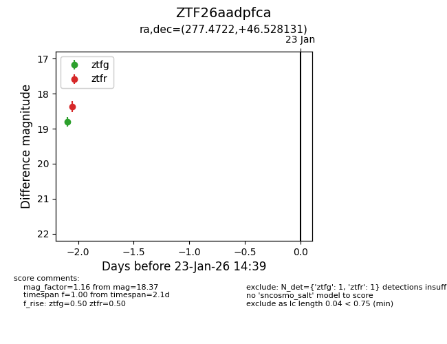
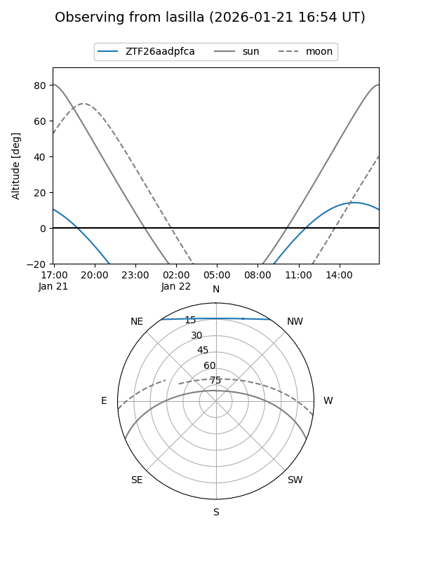
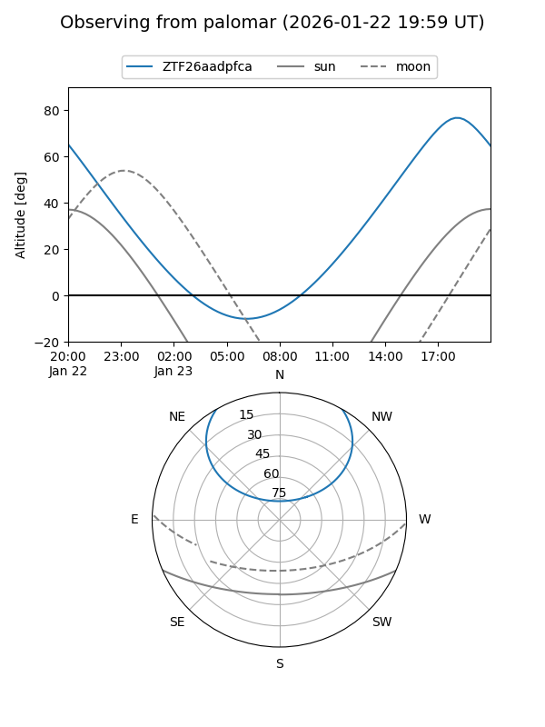

ZTF26aadpfca
Target ZTF26aadpfca at 2026-01-21 14:36
Aliases and brokers:
FINK: link
Lasair: link
ALeRCE: link
alt names
ZTF26aadpfca (ztf,fink_ztf)
Coordinates:
equatorial (ra, dec) = 277.4722,+46.52813
equatorial (HMS+DMS) = 18:29:53.33,+46:31:41.27
galactic (l, b) = (74.9172,+22.85504)
Flags:
Photometry:
last ztfr=18.37
1 ztfr detections
Lightcurve

Visibility


Additional plots